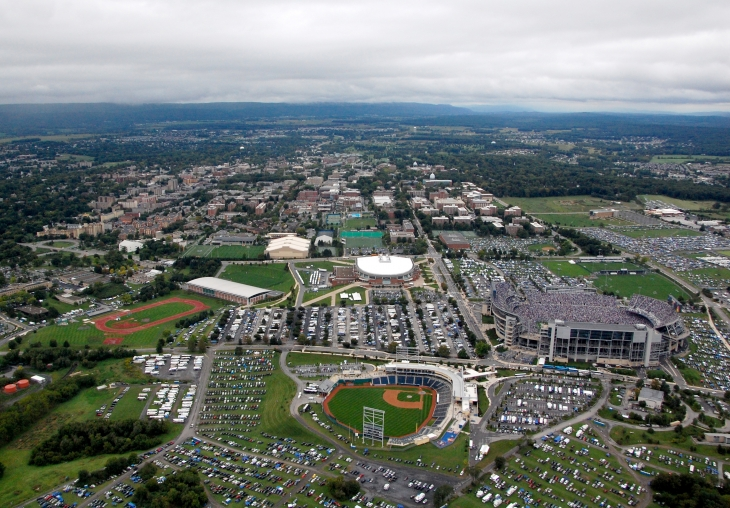

Pennsylvania State University
Ranking: #48 in World Universities
Number of students: 45,000
Quantity of Campus: 24
Foundation year: 1855
The Pennsylvania State University (commonly referred to as Penn State or PSU) is a public, state-related research university with campuses and facilities throughout Pennsylvania. Founded in 1855, the university has a stated threefold mission of teaching, research, and public service. Its instructional missionincludes undergraduate, graduate, professional and continuing education offered through resident instruction and online delivery. Its University Park campus, the flagship campus, lies within the Borough of State College and College Township. It has two law schools, Penn State Law, on the school's University Park campus, and Dickinson Law, located in Carlisle. The College of Medicine is located in Hershey. Penn State has another 19 commonwealth campuses and 5 special-mission campuses located across the state. Penn State has been labeled one of the "Public Ivies," a publicly funded university considered as providing a quality of education comparable to those of the Ivy League.
Annual enrollment at the University Park campus totals more than 45,000 graduate and undergraduate students, making it one of the largest universities in the United States. It has the world's largest dues-paying alumni association. The university's total enrollment in 2009–10 was approximately 94,300 across its 24 campuses and online through its World Campus.
The university offers more than 160 majors among all its campuses and administers $2.03 billion (as of June 30, 2013) in endowment and similar funds. The university's research expenditures exceeded $753 million for the 2009 fiscal year and was ranked 9th among U.S. universities in research income by the National Science Foundation.
Annually, the university hosts the Penn State IFC/Panhellenic Dance Marathon (THON), which is the world's largest student-run philanthropy.This event is held in the Bryce Jordan Center on the University Park campus. In 2014, THON raised a program record of $13.3 million.The university's athletics teams compete in Division I of the NCAA and are collectively known as the Penn State Nittany Lions. They compete in the Big Ten Conference for most sports.
What did I do here?
I was an International Student sponsored by the Brazilian Government to study abroad. As part of my program I had to either do research at a university or work for an American company. I had the outstading opportunitty to do research at Penn State University, specifically being part of Professor John Carrolls' team. We will be developing during the Summer of 2015 one mobile app. The main focus of the research is the Timebanking concept which uses time as a form of currency to encourage service exchanges among timebank members in the same community.
